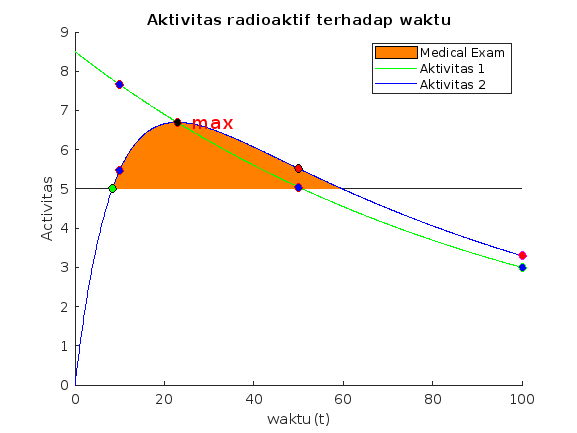

hl1 = 66.5
hl2 = 6
a0 = 8.5
lambda1 = log(2)/hl1
lambda2 = log(2)/hl2
x = [0:0.1:100]
g = @(x) a0*exp(-lambda1*x)
a1 = g(x)
f = @(x) (lambda2/(lambda2-lambda1))*a0*(exp(-lambda1*x)-exp(-lambda2*x))
y = f(x)
h = @(x) 5
hold on
idx=y>5&y==f(x);
H=area(x(idx),y(idx),5);
set(H(1),'FaceColor',[1 0.5 0]);
plot(x,a1,'g')
plot(x,y, 'b')
x_intersect = fzero(@(x) f(x) - h(x), 0)
y_intersect = f(x_intersect);
plot(x_intersect, y_intersect, 'ko', 'MarkerFaceColor', 'g');
xlabel('waktu(t)')
ylabel('Activitas')
title('Aktivitas radioaktif terhadap waktu')
[ymax, idx] = max(y)
xmax = x(idx)
plot(xmax, ymax, 'ro', 'MarkerFaceColor','k');
plot(xmax, g(xmax), 'ro', 'MarkerFaceColor','k');
text(3+xmax,ymax,'max','Color','red','FontSize',14)
plot(10, g(10), 'ro', 'MarkerFaceColor','b')
plot(50, g(50), 'ro', 'MarkerFaceColor','b')
plot(100, g(100), 'go', 'MarkerFaceColor','b')
plot(10, f(10), 'ro', 'MarkerFaceColor','b')
plot(50, f(50), 'ko', 'MarkerFaceColor','r')
plot(100, f(100), 'mo', 'MarkerFaceColor','r')
[lh, labelhandles] = legend({'Medical Exam','Aktivitas 1','Aktivitas 2'})
